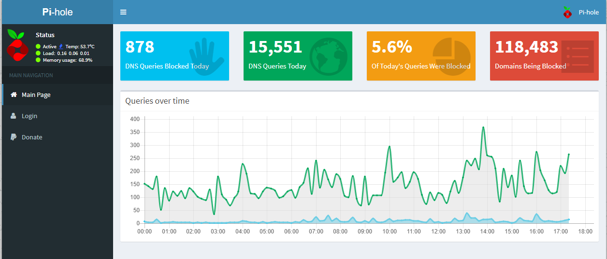

Raspberry Pi 3 III Pi-hole PiVPN
In this final post I will talk about things you can do with an always running pi not related to media. That’s why is a bonus track.
Pi-hole - Block ads in your local network
I’m used to have always installed an ad-blocker on my browser, the web ads got out of hand long time ago with giant banners that block all the screen so it’s more like a survival thing. The problem comes with the phone browser, there are no good blockers there.
So imagine a software that blocks the ads but not once they are in the browser, before, they don’t even arrive to your network, your network performance improves, this is Pi-Hole. It even blocks the ads you get on the phone games, amazing.
The installation is very easy and once you have done you can access to manager web with all the info about what’s being blocked, etc.
curl -sSL https://install.pi-hole.net | bash

PiVPN
It’s really useful to have a VPN available if you need to use internet in a typical airport “free wifi”, the ones that are not recommended to use with sensible data. PiVPN installs OpenVPN on your raspberri in a very simple way. It all starts with a curl command like with pi-hole
curl -L https://install.pivpn.io | bash
Once installed you can create clients for windows/mac/android/iphone.
Free DNS
The only totally free dns provider I found, that does not even send an email monthly to reactivate your account is freedns.afraid.org. You can refresh the IP with a cron job (later more detail about that)
Backup
You can create a backup (.img) of your SD card to a network / USB drive while the card is inserted in your pi.
Create an image of the card currently in the pi to a network drive / USB drive using the dd command:
sudo dd if=/dev/mmcblk0p2 of=/home/pi/networkdrive/my.img bs=1M
(replace /dev/mmcblk0p2 with your own SD card and /home/pi/networkdrive/my.img with your own network drive / USB drive + image file name)
And if we want this to run periodically? keep reading
Self maintenance with cron jobs
Last but not least, since the raspberry will be running 24/7 it’s a good idea to run some commands from time to time to have everything running smoothly. I do it with cron jobs. If you run this command
sudo crontab -e
You’ll see the jobs that need root rights to run. I have the following:
@daily dd if=/dev/mmcblk0p2 of=/home/pi/networkdrive/rasp-`date +\%Y\%m\%d\%H\%M\%S`.img bs=1M
0 3 * * * /usr/bin/apt-get update && /usr/bin/apt-get upgrade -q -y >> /var/log/apt/myupdates.log
0 5 * * 0 reboot
Well the first one is the command that makes the backup but the name depends on the date and time so I can have backups of several days in the same folder.
The second one is simply and update and an upgrade that writes a log for debug purposes. It runs daily at 3am. The third is that once a week I want the raspberry to do a reboot at 5am.
Now if I run this other command:
crontab -e
I can see more jobs I have, one is the free DNS to work
0 5 * * * find /media/netdisk/backup/ -mindepth 1 -type f -mtime +3 -delete
The only one left deletes the backup files older than 3 days, otherwise my HD was full very easily and I had to delete the backups manually, no way!